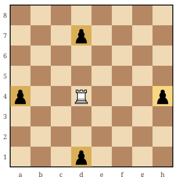
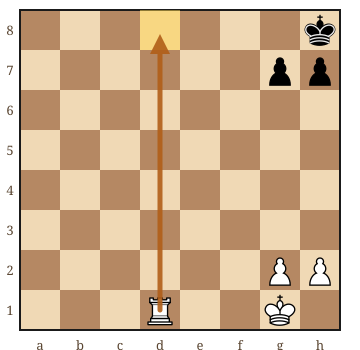
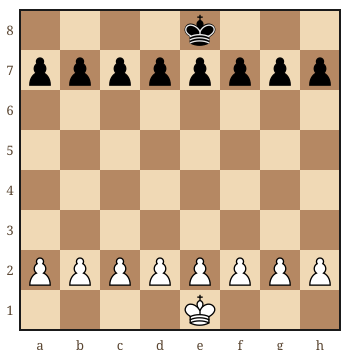

Au sommaire
Avant de commencer : les 3 règles d'or
Avant même de sortir l'échiquier, gravez ces 3 principes dans votre esprit. Ils font la différence entre un enfant passionné et un enfant qui fuit dès qu'il voit un échiquier :
Étape 1 : Créer le désir (avant même de parler de règles)
Beaucoup de parents font l'erreur de commencer par "Bon, je vais t'apprendre les règles". STOP ! ❌
D'abord, créez l'envie. Comment ?
Racontez des histoires
"Tu vois ces pièces ? C'est un royaume. Les tours sont des châteaux, les cavaliers sont de vrais chevaux qui peuvent SAUTER par-dessus tout le monde, et le roi... eh bien, tout le monde veut le protéger parce qu'il est un peu maladroit."
Jouez avec les pièces (sans règles)
Laissez votre enfant manipuler les pièces librement. Faire des batailles imaginaires, construire des tours, inventer des règles... C'est parfait ! Cette phase de jeu libre est CRUCIALE.
Étape 2 : Les règles, une pièce à la fois (pas toutes d'un coup !)
Voici l'erreur classique : expliquer toutes les pièces en une seule séance. Résultat ? Votre enfant est perdu et démotivé.
La bonne méthode : Une pièce par séance. Oui, UNE SEULE.
Si vous voulez vérifier un déplacement avant de l'expliquer, les règles des échecs pour débutants montrent chaque pièce avec son diagramme — c'est aussi un bon support à mettre sous les yeux de l'enfant.
1Commencez par les pions
Pourquoi ? Parce que c'est simple : ils avancent tout droit, mangent en diagonale. Point.
Faites un mini-jeu : placez juste les pions des deux côtés et voyez qui arrive de l'autre côté en premier. C'est ludique, ça apprend la base, et c'est VITE TERMINÉ (important avec les enfants).
2La tour ensuite
"La tour, c'est comme un taxi : elle va tout droit dans une direction, horizontal ou vertical. Elle ne tourne pas en diagonale."
Mini-jeu : placez une tour et des pions adverses. Mission : capturer tous les pions en 5 coups maximum.
3Le fou (attention, piège !)
"Le fou est un magicien qui ne marche QUE en diagonale. Il a ses chemins préférés et ne s'en écarte jamais."
4Le cavalier (le préféré des enfants)
"Le cavalier, c'est un vrai cheval. Il SAUTE par-dessus tout le monde ! Il fait un 'L' : 2 cases dans une direction, puis 1 case perpendiculaire."
C'est la pièce qui pose le plus de problèmes... mais aussi celle que les enfants adorent ! Prenez votre temps sur celle-ci.
5La dame (la super-héroïne)
"La dame, c'est la plus forte. Elle peut aller dans TOUTES les directions : comme une tour ET comme un fou en même temps !"
6Le roi (à garder pour la fin)
"Le roi, c'est un papi un peu lent. Il peut aller dans toutes les directions, mais une seule case à la fois. Et surtout : on doit le protéger à tout prix !"
Étape 3 : Les mini-jeux pour initier les enfants avant la vraie partie
NE COMMENCEZ PAS par une partie complète ! C'est trop long, trop complexe. Voici mes trois mini-jeux favoris, avec une position de départ pour chacun — vous pouvez les reproduire tels quels sur votre échiquier :
Le jeu du "Capture tout"
Placez 4 à 6 pièces adverses au hasard. Votre enfant doit toutes les capturer avec une seule pièce (tour ou dame). Ça entraîne la vision spatiale — et ça lui apprend, sans s'en rendre compte, à planifier un ordre de coups.

Le jeu du "Mat en 1 coup"
Créez des positions simples où votre enfant doit trouver comment mettre le roi adverse mat en un seul coup. C'est comme une énigme ! Commencez par le mat du couloir, le plus facile à voir : le roi est coincé derrière ses propres pions.

La course de pions
Seulement des pions + les rois. Premier à promouvoir un pion gagne. Ça apprend la stratégie de base et c'est rapide — et l'enfant découvre seul la promotion, une règle qu'il aurait oubliée si vous l'aviez simplement récitée.

Étape 4 : La première vraie partie (enfin !)
Quand passer à une vraie partie ? Quand votre enfant :
- ✅ Connaît le mouvement de toutes les pièces
- ✅ Comprend l'échec et le mat
- ✅ A envie d'essayer une "vraie" partie
Pour la première partie :
Les erreurs fatales à éviter (j'en ai vu des dizaines !)
Erreur #1 : Vouloir aller trop vite
"On va apprendre toutes les pièces aujourd'hui !" → Recette pour le dégoûter. Patience, patience, patience.
Erreur #2 : Être trop sérieux
Les échecs, c'est FUN ! Si vous êtes tendu et ultra-concentré, votre enfant va associer échecs = truc ennuyeux et stressant.
Erreur #3 : Corriger sans arrêt
"Non, pas comme ça !" "Attention, tu ne peux pas faire ça !" → À petites doses ! Laissez-le se tromper. C'est comme ça qu'on apprend. Les échecs ont d'ailleurs de nombreux bienfaits prouvés pour le développement des enfants, y compris apprendre de ses erreurs.
Erreur #4 : Oublier que c'est un jeu
Dès que ça devient une corvée, c'est perdu. Si votre enfant n'a pas envie un jour, pas grave ! On reprendra demain. Zéro pression.
Bonus : Les outils qui facilitent l'apprentissage
Applications recommandées
Oui, les écrans peuvent aider ! Des apps comme Chess Kid ou Play Magnus proposent des mini-jeux parfaits pour les enfants. Mais attention : 15 minutes max par jour. Si vous hésitez entre écrans et échiquier, lisez notre comparatif échecs vs jeux vidéo : pourquoi les parents devraient s'y intéresser.
Un bon échiquier
Le meilleur outil reste un échiquier physique. Pour les enfants, un échiquier pliable est idéal : facile à ranger, transportable, et parfait pour jouer en famille.
Livres et ressources
Les livres d'échecs illustrés pour enfants sont géniaux. Cherchez ceux avec beaucoup d'images et peu de texte.
Cours avec un prof
Bon, je suis partial... mais un prof d'échecs spécialisé enfants à Paris apporte énormément :
- Méthode éprouvée et ludique
- Progression structurée
- Motivation externe (un enfant se donne souvent plus à fond avec quelqu'un d'autre qu'avec ses parents)
- Correction des mauvaises habitudes avant qu'elles ne s'installent
Vous voulez que votre enfant découvre les échecs dans les meilleures conditions ?
Je propose un premier cours GRATUIT — à domicile à Paris ou Versailles (50€/h ensuite), ou en visio partout en France (40€/h). Évaluation du niveau et plan d'apprentissage adapté. Pas de pression, que du plaisir !
Le secret ultime (que personne ne vous dit)
Vous voulez connaître le VRAI secret pour apprendre les échecs à un enfant ?
Jouez vous-même.
Sérieusement. Si votre enfant vous voit jouer, s'amuser, vous concentrer sur une partie... il voudra faire pareil. Les enfants apprennent par imitation plus que par instruction.
Installez-vous avec un échiquier pendant qu'il joue à côté. Regardez des parties en ligne. Parlez de vos parties au dîner. Créez une CULTURE des échecs à la maison.
Récap : Votre plan d'action en 30 jours
Voici un planning réaliste pour initier votre enfant aux échecs :
Semaine 2 : Tour + Fou + mini-jeux
Semaine 3 : Cavalier + Dame + Roi
Semaine 4 : Échec, mat, et premières vraies parties
Rythme : 15-20 minutes, 3-4 fois par semaine. Pas plus !
Verdict final
Apprendre les échecs à un enfant, c'est comme planter une graine. Vous ne verrez pas de résultats spectaculaires tout de suite. Mais avec patience, régularité, et surtout PLAISIR, vous verrez cette graine germer.
Dans quelques mois, vous regarderez votre enfant analyser l'échiquier avec concentration, anticiper vos coups, créer des stratégies... Et vous vous direz : "Wow, c'est moi qui lui ai appris ça."
Alors, prêt(e) à vous lancer ? L'échiquier vous attend ! ♟️
Besoin d'un coup de pouce pour démarrer ?
Découvrez comment je transforme l'apprentissage des échecs en aventure passionnante pour les enfants.
Discutons de votre projetArticle recommandé
Vous vous demandez pourquoi commencer si tôt ? Découvrez tous les bénéfices concrets des échecs pour les enfants :
Les 7 Bienfaits des Échecs pour Enfants dès 5 ans Concentration, logique, patience... Ce que les échecs apportent vraiment →Vous préférez être accompagné ?
Cours d'échecs pour enfants à Paris Un professeur particulier pour faire progresser votre enfant. 1er cours offert →
Article rédigé par Nicolas Musicki, professeur d'échecs à Paris et Versailles
Retour à l'accueil |
Me contacter
Questions fréquentes
Comment apprendre les échecs à un enfant ?
Pour apprendre les échecs à un enfant, procédez en 5 étapes : créer d'abord l'envie avec des histoires et du jeu libre avec les pièces, enseigner les règles une pièce à la fois en commençant par les pions, pratiquer des mini-jeux (course de pions, capture, mat en 1 coup), puis passer à une vraie partie quand l'enfant connaît tous les mouvements et comprend l'échec et mat. Les séances doivent durer 15 à 20 minutes maximum et rester ludiques.
Par quelle pièce commencer pour enseigner les échecs à un enfant ?
Commencez par les pions, car leur mouvement est le plus simple : ils avancent tout droit et capturent en diagonale. Enseignez ensuite la tour, le fou, le cavalier, la dame et enfin le roi, à raison d'une seule pièce par séance. Un mini-jeu de course de pions permet de pratiquer immédiatement de façon ludique.
Combien de temps faut-il pour qu'un enfant apprenne les échecs ?
Avec des séances de 15 à 20 minutes, 3 à 4 fois par semaine, un enfant peut apprendre les bases des échecs en environ 30 jours : découverte et pions la première semaine, tour et fou la deuxième, cavalier, dame et roi la troisième, puis échec, mat et premières vraies parties la quatrième semaine.
Existe-t-il un guide PDF pour apprendre les échecs aux enfants ?
Oui. Le guide gratuit « Apprendre les Échecs — Volume 1 » (96 pages, PDF) est écrit pour les débutants absolus : une section par pièce avec ses diagrammes, les règles spéciales, puis des exercices corrigés que parent et enfant peuvent faire ensemble. Il est envoyé par email depuis le formulaire de la page, sans engagement.